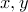
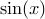
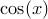

Gnuplot has a plotting mode called “multiplot” which allows many graphs to be plotted together, and display side-by-side. The basic syntax of this mode is reproduced in PyXPlot, but is hugely extended.
The mode is entered by the command “set multiplot”. This can be compared to taking a blank sheet of paper on which to place plots. Plots are then placed on that sheet of paper, as usual, with the plot command. The position of each plot is set using the set origin command, which takes a comma-separated  coordinate pair, measured in centimetres. The following, for example, would plot a graph of  to the left of a plot of :
set multiplot plot sin(x) set origin 10,0 plot cos(x)
The multiplot page may subsequently be cleared with the clear command, and multiplot mode may be left using the “set nomultiplot” command.